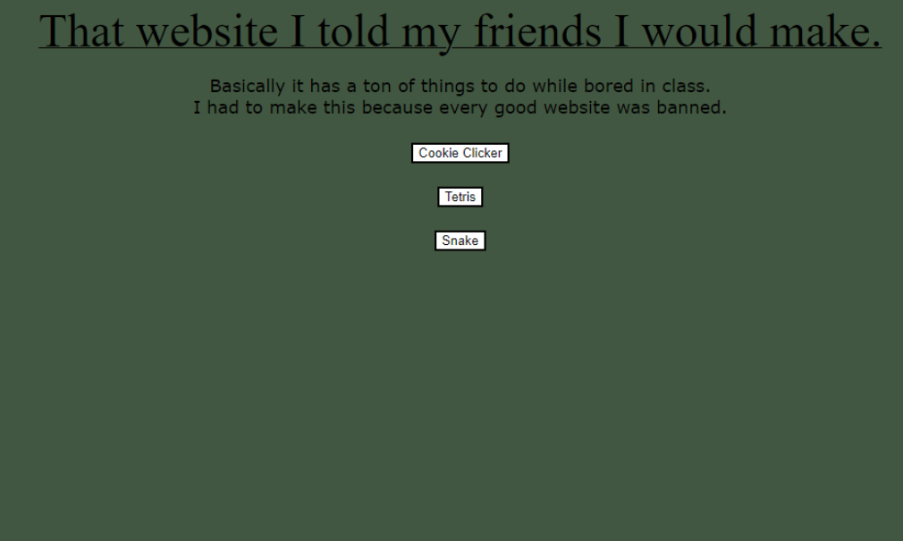
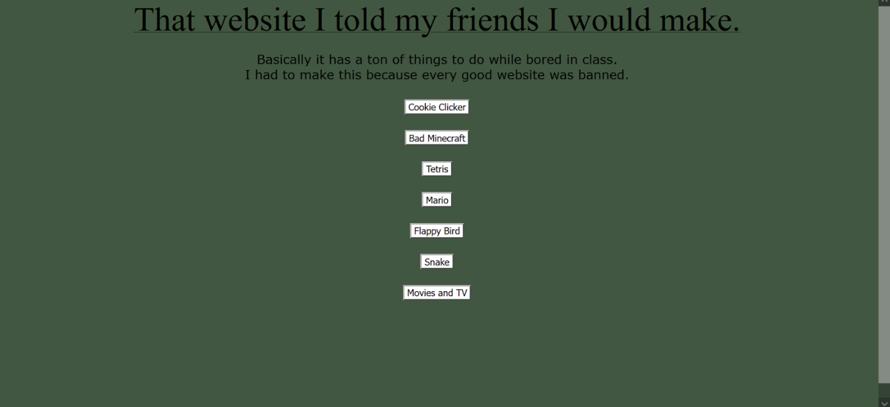
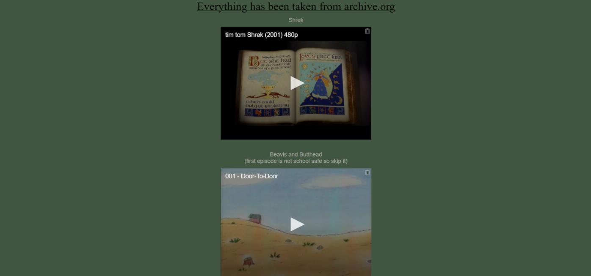
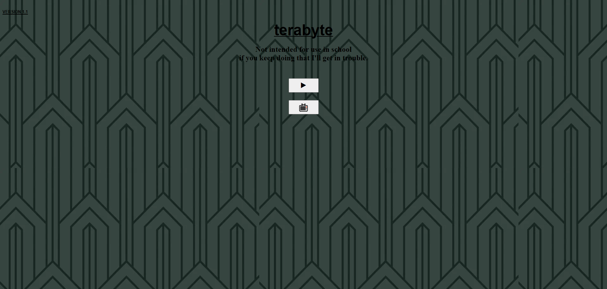
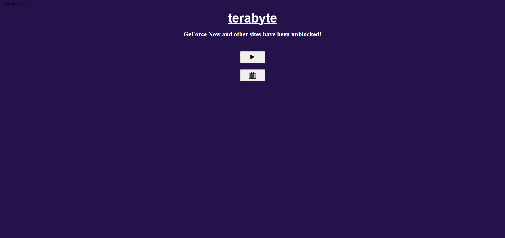
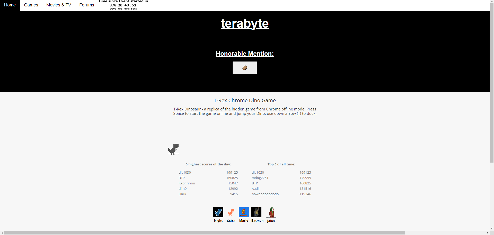
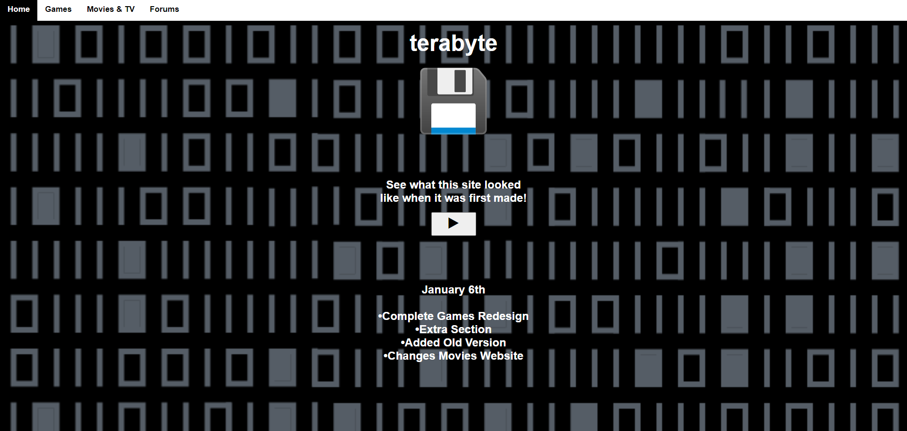
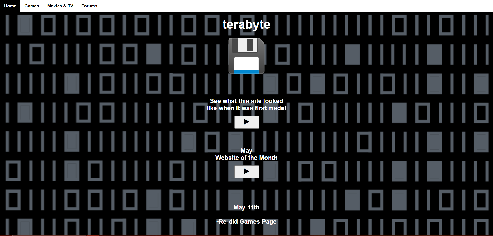
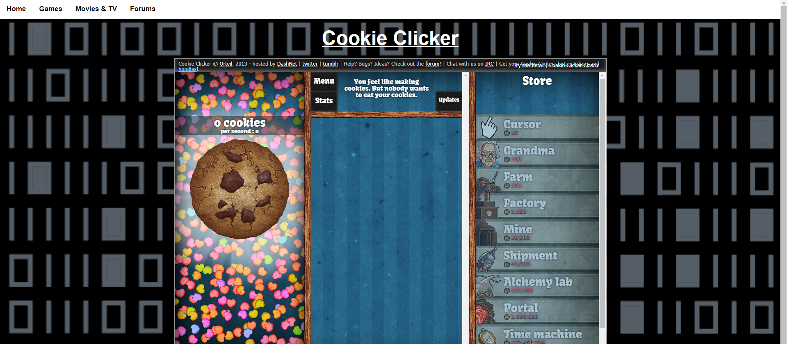
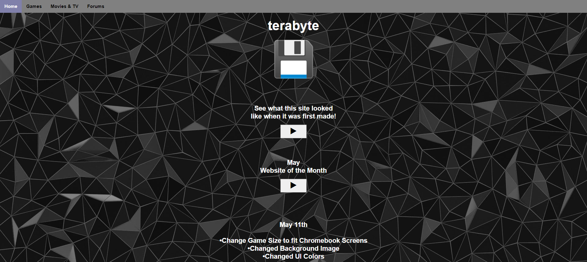

History Of The 4862 Website
3/8/24
The 4862 website started out as "That website I told my friends I would make." It was just the title, some text, and 3 buttons for games. I disguised the tabs by making them say stuff like "New Tab", or in Cookie Clicker's case, I made it say your cookie count as a math equation. To prevent the website from ever being blocked, I made the link bmadden057.github.io/(a 4 digit code). I changed the code every once in a while until I realized the school didn't even have a clue about the website. The last code I ever used was 4862, which ended up becoming the websites name later on.

Next, I added new games, movies/tv, and a chat. (The chat is not visible in the picture below).


I eventually ended up actually giving the website a real name. The name was Terabyte. I tried to follow the theme of the original green color, but I ended up expirementing with other ideas for themes. I also added designated buttons for the games and movies, since there was starting to be too many games to keep on the home page.

(The message "Not intended for use in school" was a backup incase I was ever accused of making this for people to use in school. Luckily I never needed to use the excuse though.)

I settled on a black and white theme and also added lots of other massive improvements. There was now a top bar to select different things, which freed up room on the home page for other stuff. There was also an honorable mention for websites I thought were cool, this would end up turning into website of the month. The home page was still feeling empty so I ended up adding in the dino game. The movie Cocaine Bear was also getting really popular, so I added a countdown until it released. The countdown is now broken though, as you can see in the image.

(There are versions of Terabyte before this, without the honorable mention, dino game, or countdown, but these have all been lost.)
Over time, the site became way more familiar to what it is today. This version was the peak of 4862, lots of people were using it, new updates were frequently coming out, and new games I never though to be possible were added. This version became the standard for every single update in the future. Whenever I massively changed the website it still had to follow the same basic design.

The next update was the hardest update to ever make. Instead of sending you to the link of the game when you clicked a button, you could now play games inside the website. It doesn't sound that complicated, but there were so many games to make a tab for. This update also introduced website of the month and many more games.


Next was the last known major update before the website was taken down for the summer. There wasn't much for features, but there was a whole color and background change.

While the website was down for the summer, I worked on it occasionally until it became what it is now. Another UI change, news, better organized stuff, and then finally the name change to 4862.
Sometimes when chromebooks have opened a website before, but not with the newest update, the old update will show. If this glitch didn't happen, you wouldnt ever be able to accurately see and use the first version of the website at all.